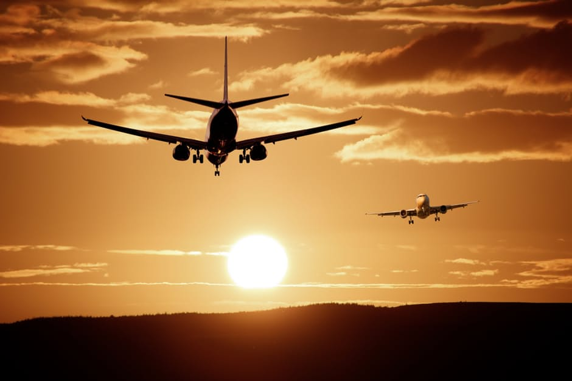

Frankfurt - Paris - Bristol
This website is dedicated to our hometowns of Frankfurt, Paris and Bristol to give you an overview of all the best things that you can do in these 3 very unique and very beautiful European cities.
From bars, restaurants to cafes, there are great things to do with family and friends.